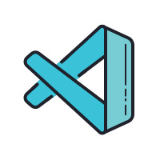

Editores de codigo
El dia de hoy vamos a hablar de lo que es un editor de codigo. ¿Que es un editor de codigo?, es un editor de texto diseñado específicamente para editar el código fuente de programas informáticos. Puede ser una aplicación indivclassual o estar incluclasso en un entorno de desarrollo integrado. Puede ser una aplicación individual o estar incluido en un entorno de desarrollo integrado.
Los editores de código fuente tienen características diseñadas exclusivamente para simplificar y acelerar la escritura de código fuente, como resaltado de sintaxis, autocompletar y pareo de llaves. Estos editores también proveen un modo conveniente de ejecutar un compilador, un intérprete, un depurador, o cualquier otro programa que sea relevante en el proceso de desarrollo de software. Por lo que, si bien muchos editores de texto pueden ser usados para editar código fuente sin problemas, si no mejoran, automatizan y facilitan la edición del código, no ameritan ser llamados "editores de código fuente", y son únicamente editores de texto que pueden ser usados para editar código fuente.
Algunos editores de código fuente verifican la sintaxis a medida que el programador escribe, alertando inmediatamente sobre los problemas de sintaxis que puedan surgir. Otros editores de código fuente comprimen el código, convirtiendo las palabras clave en tokens de un solo byte, eliminado espacios en blanco innecesarios y convirtiendo los números a una forma binaria. Estos editores tokenizadores descomprimen el código fuente al momento de visualizarlo, imprimiéndolo con los espacios y mayúsculas adecuadas. Existen editores que realizan ambas tareas.
Mis preferidos
Visual Studio Code
Código de Visual Studio, también conocido como VS Code, es un editor de código de fuente abierta de Microsoft. Es un editor de texto multiplataforma que puede ejecutarse en cualquier dispositivo, ya sea en Linux, Windows o Mac.
Este editor de texto está enfocado a incrementar el desempeño del desarrollador. Funciones como la finalización automática y la depuración del sistema ayudan a mejorar las tareas diarias del desarrollador.
De todos los editores de código de la lista, probablemente sea el más cercano a ser un IDE. Aunque es convincente, requiere un tiempo considerable durante la puesta en marcha, que son las únicas desventajas de este editor de texto. Sin embargo, mientras lo usa, VS Code es rápido y capaz de manejar bastantes tareas emocionantes, como confirmaciones rápidas de Git o abrir y clasificar el contenido de varias carpetas.
Sublime text
Texto sublime es una aplicación liviana que facilita a los desarrolladores trabajar en ella y, a pesar de ser liviana, es mucho más liviana en la cantidad de funciones que ofrece. Se construyó principalmente con una API de Python para los equipos de desarrollo que hoy están dedicando horas a codificar.
Tiene varios atajos de teclado, lo que lo hace más flexible para que el desarrollador use las diferentes funciones. Es compatible con la integración multiplataforma y se ha optimizado para una velocidad rápida y una interfaz fácil de usar. Está disponible por un período de prueba gratuito, después del cual los desarrolladores deben pagar $ 80.
Editor Atom
Atomo es un editor de texto y código de fuente abierta para Linux, Mac OS y Microsoft Windows. Atom admite Git Control integrado y los complementos escritos en JavaScript. Una de las características sobresalientes de Atom es que le permite compartir el progreso de su proyecto con amigos. El uso de Teletype for Atom (desde compartir conocimientos hasta enseñar) permitirá a los desarrolladores trabajar juntos en el mismo proyecto. Una de las cosas difíciles para los desarrolladores es colaborar mientras trabajan en las mismas ideas. Atom habilita esta operación directamente desde su editor de texto.
Sus características principales son:
- Sirve para trabajar en cualquier sistema operativo (Windows, OS X o Linux)
- Puedes instalarle paquetes o crear los tuyos propios
- Autocompletado inteligente que permite escribir código más rápido
Acerca de
Aqui dejaremos las referencias a otras paginas web que usamos como apoyo para esta investigación.
- Editores de codigo / referencia a Wikipedia
- Mis preferidos / referencia a GEEKFLARE
Texto sobre codigos de texto, definicion y mas.
Información de los 10 mejores editores de texto, caracterisiticas y virtudes.